Candidate List 20260722Last night — ZTF: 4,046 passed basic cuts (185 young) · LSST: 0 passed basic cuts (0 young)Previous Day Next Day
Section 1: New Sources (age<1d) Section 2: Old (1-5d) sources observed last nightplaceholder
Section 1: New Afterglow/FBOT Cands Last Night (3)
1. [ZTF] ZTF26abivqwv (Afterglow?) [Back to Top] [Share] [Trigger Swift] [Fritz Alert] [Fritz Source] [Lasair]RA, Dec: 261.25562, 45.6456 17h25m1.35s, 45d38m44.17sGalactic (l, b): 71.53854, 33.71916 ext(g-r) = 0.027

TESS: Sectors [ 24 25 26 40 51 52 53 78 80 117 118]
PS1: 0 sources in 3 arcsec
LegacySurvey: 1 sources in 3 arcsec Closest: d = 4.22 arcsec, 340.9 deg (east of north) photoz=0.51 (68% bounds 0.41, 0.7), type=REX peak abs mag = -23.21 (68% bounds -22.67, -24.04)

Extinction-corrected gr color:
From alerts: 2.18 +/- 0.41 mag
Consistent with synchrotron, g-r>0!
Rise Rate:
r: 1.25 mag/day
Fade Rate:
2. [ZTF] ZTF26abiwcvm (Afterglow?FBOT?) [Back to Top] [Share] [Trigger Swift] [Fritz Alert] [Fritz Source] [Lasair]RA, Dec: 290.2152, -1.75984 19h20m51.65s, -1d-45m-35.41sGalactic (l, b): 34.72425, -7.34791 ext(g-r) = 0.704

TESS: Sectors [54 80]
PS1: 1 source in 3 arcsec Closest: d = 0.80 arcsec photoz=0.48+/-0.83 peak abs mag = -24.19
LegacySurvey: 0 sources in 3 arcsec

Extinction-corrected gr color:
From alerts: -0.32 +/- 0.2 mag
Extinction-corrected gi color:
From alerts: -0.39 +/- 0.2 mag
Extinction-corrected ri color:
From alerts: -0.07 +/- 0.17 mag
Consistent with synchrotron, g-r>0!
Rise Rate:
g: 0.28 mag/day
r: 0.61 mag/day
i: 0.27 mag/day
Fade Rate:
3. [ZTF] ZTF26abizgcp (Afterglow?) [Back to Top] [Share] [Trigger Swift] [Fritz Alert] [Fritz Source] [Lasair]RA, Dec: 321.42304, 18.19608 21h25m41.53s, 18d11m45.88sGalactic (l, b): 69.34706, -22.6232 ext(g-r) = 0.066

TESS: Sectors [55 82 82]
SDSS (<15 kpc):Found SDSS phot-z: z=0.65; peak abs mag = -25.23
PS1: 0 sources in 3 arcsec
LegacySurvey: 1 sources in 3 arcsec Closest: d = 2.82 arcsec, 125.5 deg (east of north) photoz=0.06 (68% bounds 0.01, 0.22), type=PSF peak abs mag = -19.14 (68% bounds -15.55, -22.39)

Extinction-corrected gr color:
From alerts: 3.59 +/- 0.35 mag
Consistent with synchrotron, g-r>0!
Rise Rate:
r: 2.4 mag/day
Fade Rate:
Section 2: Older Sources Observed Last Night (22)
0. [ZTF] ZTF26abhlzqf (FBOT?) [Back to Top] [Share] [Trigger Swift] [Fritz Alert] [Fritz Source] [Lasair]RA, Dec: 333.15466, 5.15487 22h12m37.12s, 5d 9m17.54sGalactic (l, b): 66.94424, -39.86419 ext(g-r) = 0.077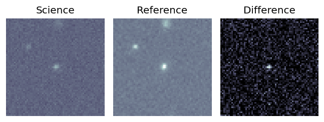
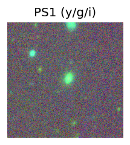
TESS: Sectors [55 82]
SDSS (<15 kpc):Found SDSS phot-z: z=0.17; peak abs mag = -19.96
PS1: 0 sources in 3 arcsec
LegacySurvey: 1 sources in 3 arcsec Closest: d = 1.56 arcsec, 284.3 deg (east of north) photoz=0.15 (68% bounds 0.15, 0.16), type=SER peak abs mag = -19.41 (68% bounds -19.3, -19.52)
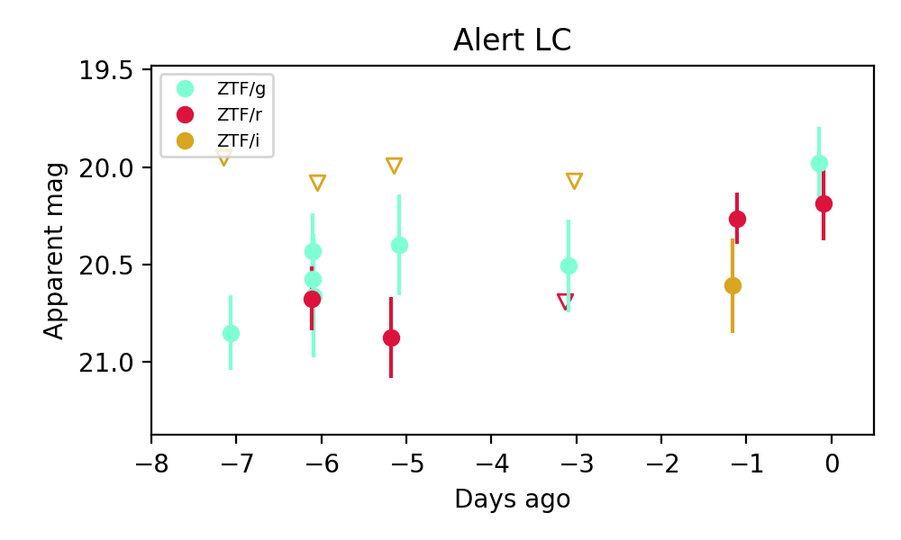
Extinction-corrected gr color:
From alerts: -0.28 +/- 0.27 mag
Extinction-corrected gi color:
From alerts: 0.32 +/- 99 mag
Extinction-corrected ri color:
From alerts: -0.39 +/- 0.28 mag
Rise Rate:
g: 0.1 mag/day
r: 0.21 mag/day
Fade Rate:
1. [ZTF] ZTF26abhycxx (FBOT?) [Back to Top] [Share] [Trigger Swift] [Fritz Alert] [Fritz Source] [Lasair]RA, Dec: 280.99357, 24.37805 18h43m58.46s, 24d22m40.97sGalactic (l, b): 54.17126, 12.39233 ext(g-r) = 0.127


TESS: Sectors [ 26 40 53 54 80 118 119]
PS1: 1 source in 3 arcsec Closest: d = 8.74 arcsec photoz=0.42+/-0.06 peak abs mag = -25.66
LegacySurvey: 0 sources in 3 arcsec

Extinction-corrected gr color:
From alerts: -0.4 +/- 0.05 mag
Rise Rate:
g: 2.02 mag/day
r: 2.04 mag/day
Fade Rate:
2. [ZTF] ZTF26abianyp (Afterglow?) [Back to Top] [Share] [Trigger Swift] [Fritz Alert] [Fritz Source] [Lasair]RA, Dec: 324.17346, 15.33062 21h36m41.63s, 15d19m50.24sGalactic (l, b): 68.89745, -26.49325 ext(g-r) = 0.13


TESS: Sectors [55 82]
SDSS (<15 kpc):Found SDSS phot-z: z=0.11; peak abs mag = -19.06
PS1: 0 sources in 3 arcsec
LegacySurvey: 1 sources in 3 arcsec Closest: d = 0.91 arcsec, 231.2 deg (east of north) photoz=0.1 (68% bounds 0.08, 0.13), type=EXP peak abs mag = -18.61 (68% bounds -17.96, -19.07)

Extinction-corrected gr color:
From alerts: -0.08 +/- 0.21 mag
Consistent with synchrotron, g-r>0!
Rise Rate:
g: 0.27 mag/day
r: 0.45 mag/day
Fade Rate:
g: 12.95 mag/day
r: 0.65 mag/day
3. [ZTF] ZTF26abipuax (FBOT?) [Back to Top] [Share] [Trigger Swift] [Fritz Alert] [Fritz Source] [Lasair]RA, Dec: 278.37724, 21.28714 18h33m30.54s, 21d17m13.69sGalactic (l, b): 50.26407, 13.31759 ext(g-r) = 0.23


TESS: Sectors [ 26 40 53 80 118 119]
SDSS (<15 kpc):Found SDSS phot-z: z=0.12; peak abs mag = -19.28
PS1: 1 source in 3 arcsec Closest: d = 0.67 arcsec photoz=0.18+/-0.01 peak abs mag = -20.34
LegacySurvey: 0 sources in 3 arcsec

Extinction-corrected gr color:
From alerts: -0.18 +/- 0.19 mag
Consistent with synchrotron, g-r>0!
Rise Rate:
g: 0.38 mag/day
r: 0.47 mag/day
Fade Rate:
4. [ZTF] ZTF26abiqrnu (Afterglow?) [Back to Top] [Share] [Trigger Swift] [Fritz Alert] [Fritz Source] [Lasair]RA, Dec: 307.42026, 30.2017 20h29m40.86s, 30d12m6.14sGalactic (l, b): 70.81277, -5.18292 ext(g-r) = 1.19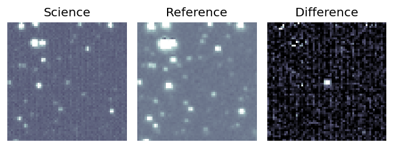
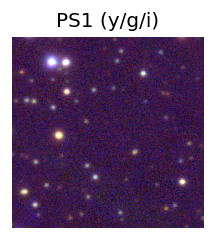
TESS: Sectors [ 14 15 41 55 81 82 120]
PS1: 0 sources in 3 arcsec
LegacySurvey: 0 sources in 3 arcsec
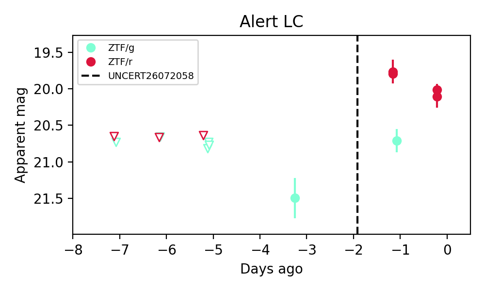
Extinction-corrected gr color:
From alerts: -0.27 +/- 0.17 mag
Rise Rate:
g: 0.36 mag/day
r: 0.21 mag/day
Fade Rate:
r: 0.25 mag/day
5. [ZTF] ZTF26abiqspb (Afterglow?) [Back to Top] [Share] [Trigger Swift] [Fritz Alert] [Fritz Source] [Lasair]RA, Dec: 311.15376, 28.98959 20h44m36.90s, 28d59m22.53sGalactic (l, b): 71.78302, -8.51143 ext(g-r) = 0.333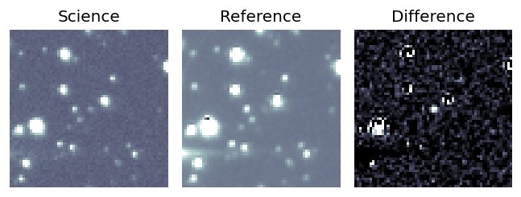
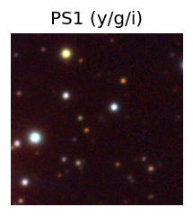
TESS: Sectors [ 14 15 41 55 82 120]
PS1: 1 source in 3 arcsec Closest: d = 1.01 arcsec photoz=0.01+/-0.00 peak abs mag = -13.99
LegacySurvey: 0 sources in 3 arcsec
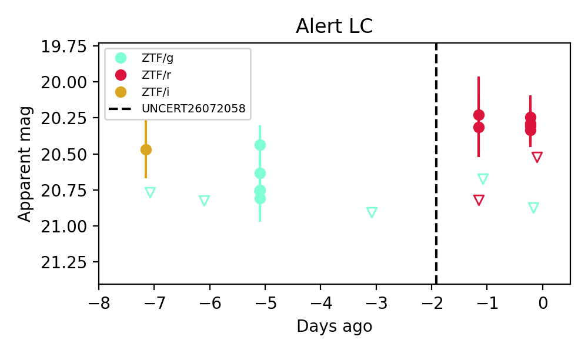
Extinction-corrected gr color:
From alerts: 0.24 +/- 99 mag
Extinction-corrected gi color:
From alerts: -0.21 +/- 99 mag
Rise Rate:
g: 24.07 mag/day
Fade Rate:
g: 0.23 mag/day
6. [ZTF] ZTF26abirwwz (Afterglow?) [Back to Top] [Share] [Trigger Swift] [Fritz Alert] [Fritz Source] [Lasair]RA, Dec: 298.80799, 37.20251 19h55m13.92s, 37d12m9.05sGalactic (l, b): 72.72462, 4.64158 ext(g-r) = 0.405

TESS: Sectors [ 14 15 54 55 74 75 81 82 119 120]
PS1: 0 sources in 3 arcsec
LegacySurvey: 0 sources in 3 arcsec

Rise Rate:
r: 1.36 mag/day
Fade Rate:
r: 0.25 mag/day
7. [ZTF] ZTF26abiunaa (Afterglow?) [Back to Top] [Share] [Trigger Swift] [Fritz Alert] [Fritz Source] [Lasair]RA, Dec: 159.48207, 46.69119 10h37m55.70s, 46d41m28.29sGalactic (l, b): 167.25203, 57.30801 ext(g-r) = 0.019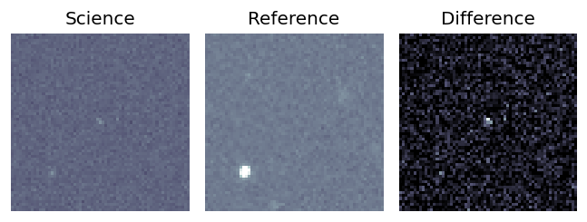
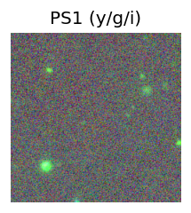
TESS: Sectors [21 48]
PS1: 0 sources in 3 arcsec
LegacySurvey: 1 sources in 3 arcsec Closest: d = 5.25 arcsec, 118.8 deg (east of north) photoz=0.69 (68% bounds 0.54, 0.86), type=REX peak abs mag = -28.88 (68% bounds -28.23, -29.47)
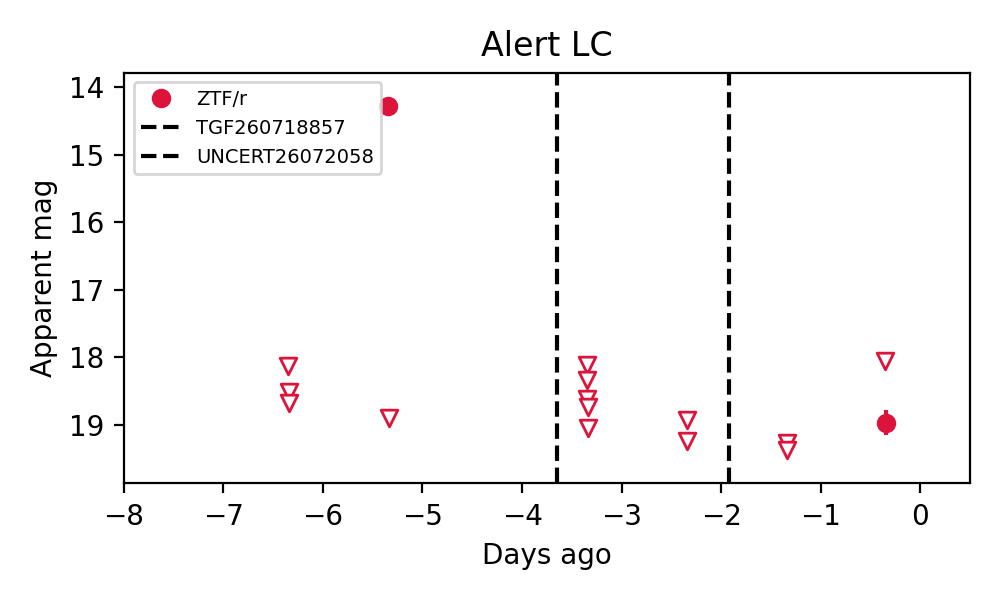
Rise Rate:
r: 4.43 mag/day
Fade Rate:
r: 2.37 mag/day
8. [ZTF] ZTF26abiveym (Afterglow?FBOT?) [Back to Top] [Share] [Trigger Swift] [Fritz Alert] [Fritz Source] [Lasair]RA, Dec: 261.69051, 11.36357 17h26m45.72s, 11d21m48.87sGalactic (l, b): 33.80431, 23.88713 ext(g-r) = 0.173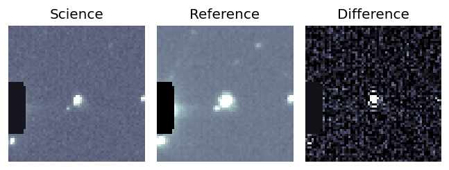
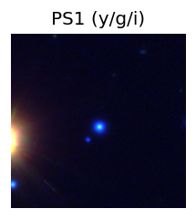
TESS: Sectors 118
PS1: 0 sources in 3 arcsec
LegacySurvey: 1 sources in 3 arcsec Closest: d = 2.62 arcsec, 182.8 deg (east of north) photoz=0.14 (68% bounds 0.03, 0.9), type=PSF peak abs mag = -21.46 (68% bounds -17.96, -26.2)
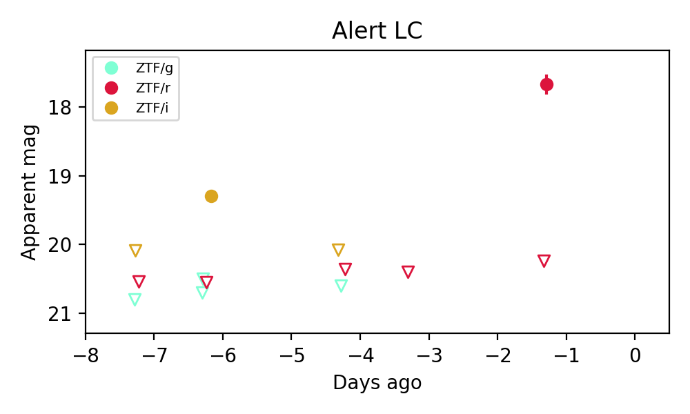
Extinction-corrected gi color:
From alerts: 1.14 +/- 99 mag
Extinction-corrected ri color:
From alerts: 1.16 +/- 99 mag
Rise Rate:
r: 64.57 mag/day
i: 0.72 mag/day
Fade Rate:
i: 0.42 mag/day
9. [ZTF] ZTF26abivlhw (Afterglow?) [Back to Top] [Share] [Trigger Swift] [Fritz Alert] [Fritz Source] [Lasair]RA, Dec: 297.23592, 24.65043 19h48m56.62s, 24d39m1.54sGalactic (l, b): 61.23421, -0.61059 ext(g-r) = 3.792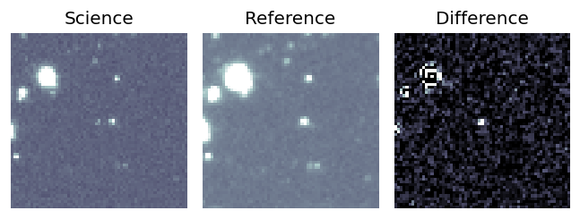
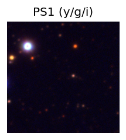
TESS: Sectors [ 14 41 54 81 119 120]
PS1: 0 sources in 3 arcsec
LegacySurvey: 0 sources in 3 arcsec
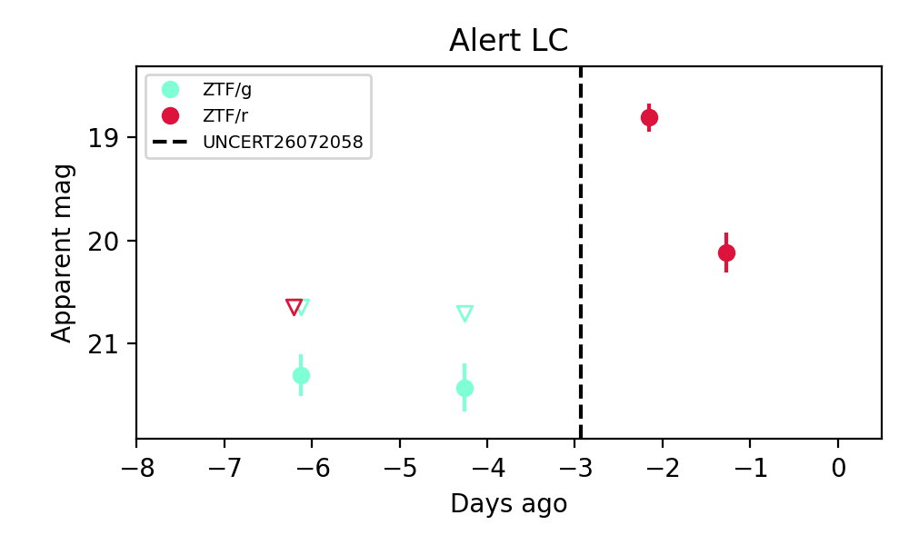
Extinction-corrected gr color:
From alerts: -3.14 +/- 99 mag
Rise Rate:
r: 0.45 mag/day
Fade Rate:
r: 1.49 mag/day
10. [ZTF] ZTF26abivlxq (FBOT?) [Back to Top] [Share] [Trigger Swift] [Fritz Alert] [Fritz Source] [Lasair]RA, Dec: 278.05492, 6.00754 18h32m13.18s, 6d 0m27.15sGalactic (l, b): 36.11793, 6.99926 ext(g-r) = 0.575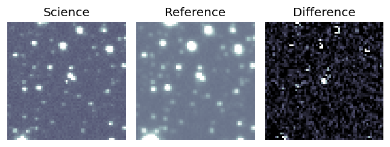
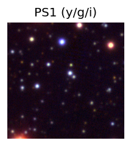
TESS: Sectors 118
PS1: 1 source in 3 arcsec Closest: d = 2.45 arcsec photoz=0.14+/-0.12 peak abs mag = -21.26
LegacySurvey: 0 sources in 3 arcsec
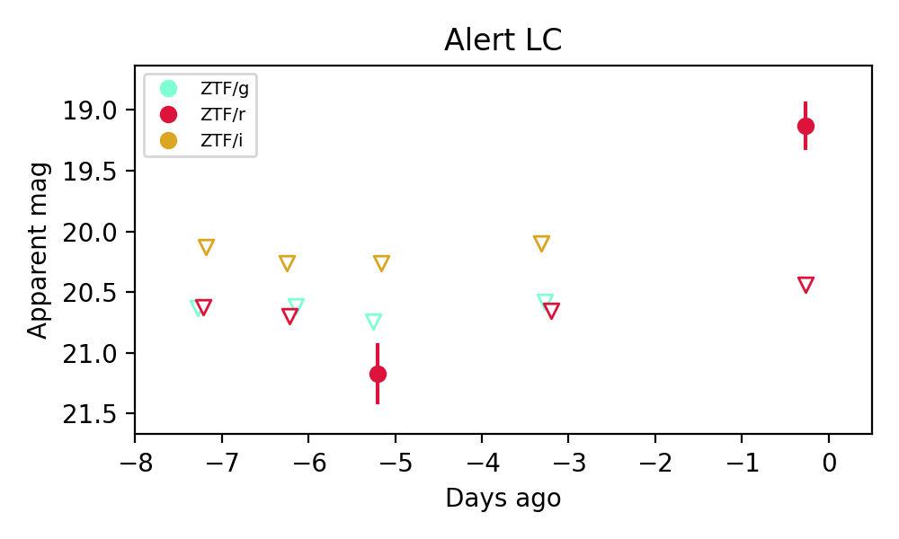
Extinction-corrected gr color:
From alerts: -1.0 +/- 99 mag
Extinction-corrected ri color:
From alerts: 0.6 +/- 99 mag
Rise Rate:
r: 0.52 mag/day
Fade Rate:
11. [ZTF] ZTF26abivmnt (FBOT?) [Back to Top] [Share] [Trigger Swift] [Fritz Alert] [Fritz Source] [Lasair]RA, Dec: 275.14391, 20.75924 18h20m34.54s, 20d45m33.26sGalactic (l, b): 48.50268, 15.8636 ext(g-r) = 0.15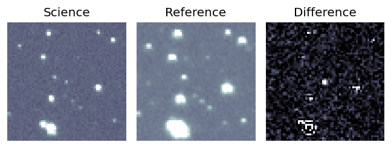
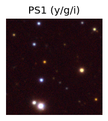
TESS: Sectors [ 26 40 53 80 118 119]
PS1: 1 source in 3 arcsec Closest: d = 3.40 arcsec photoz=0.93+/-0.10 peak abs mag = -24.31
LegacySurvey: 0 sources in 3 arcsec
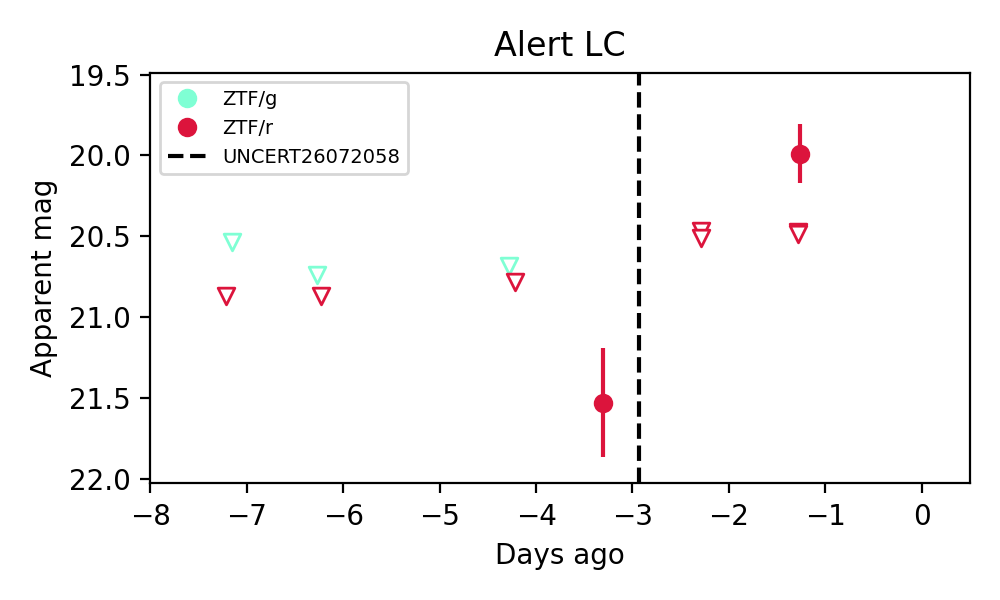
Rise Rate:
r: 23.1 mag/day
Fade Rate:
12. [ZTF] ZTF26abivpyy (Afterglow?) [Back to Top] [Share] [Trigger Swift] [Fritz Alert] [Fritz Source] [Lasair]RA, Dec: 265.32873, 43.13627 17h41m18.90s, 43d 8m10.56sGalactic (l, b): 69.07891, 30.49069 ext(g-r) = 0.047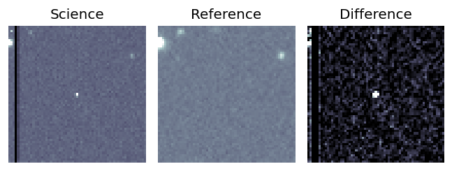
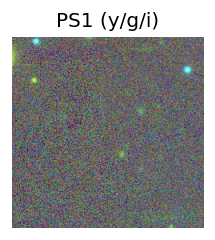
TESS: Sectors [ 25 26 40 52 53 79 117 118]
SDSS (<15 kpc):Found SDSS phot-z: z=0.93; peak abs mag = -24.88
PS1: 0 sources in 3 arcsec
LegacySurvey: 1 sources in 3 arcsec Closest: d = 5.74 arcsec, 17.5 deg (east of north) photoz=0.72 (68% bounds 0.6, 0.89), type=PSF peak abs mag = -24.1 (68% bounds -23.62, -24.64)
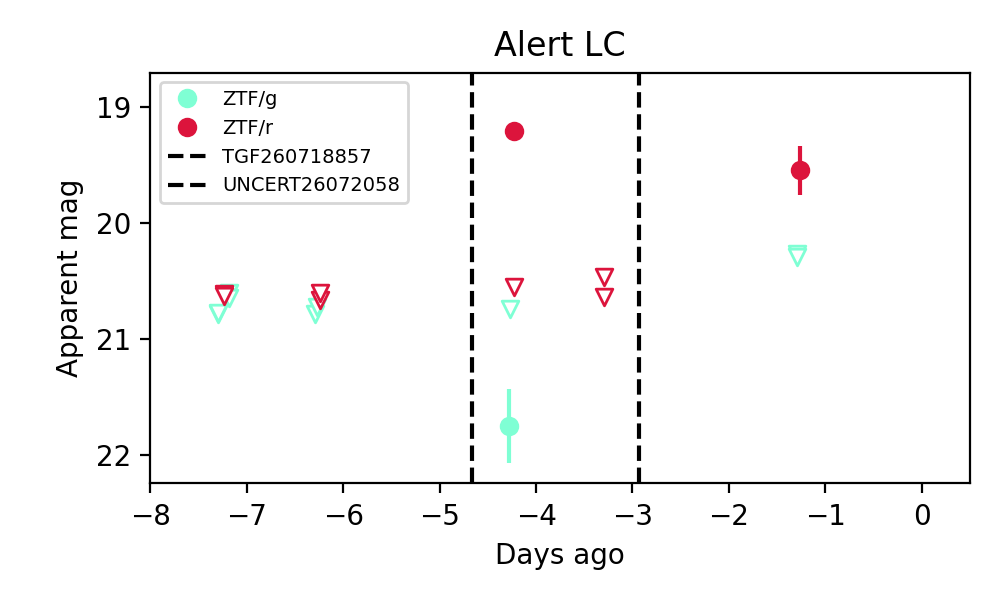
Extinction-corrected gr color:
From alerts: 0.7 +/- 99 mag
Rise Rate:
r: 0.73 mag/day
Fade Rate:
r: 1.55 mag/day
13. [ZTF] ZTF26abivqij (Afterglow?) [Back to Top] [Share] [Trigger Swift] [Fritz Alert] [Fritz Source] [Lasair]RA, Dec: 278.73505, 35.51555 18h34m56.41s, 35d30m55.99sGalactic (l, b): 64.06203, 18.48121 ext(g-r) = 0.056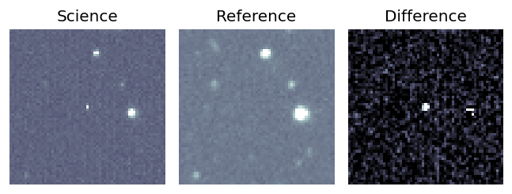
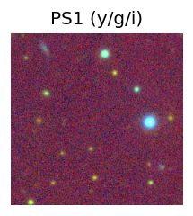
TESS: Sectors [ 26 40 53 54 74 80 81 118 119]
PS1: 0 sources in 3 arcsec
LegacySurvey: 0 sources in 3 arcsec
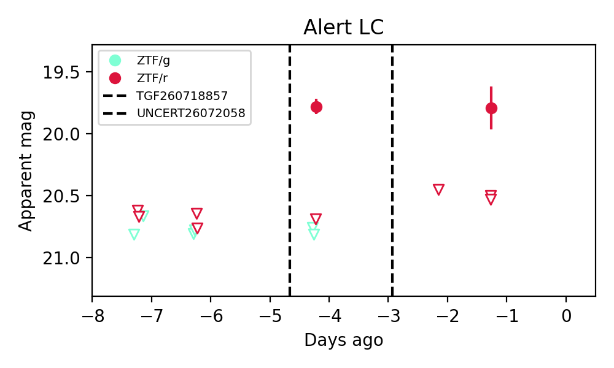
Extinction-corrected gr color:
From alerts: 0.98 +/- 99 mag
Rise Rate:
r: 0.74 mag/day
Fade Rate:
r: 0.33 mag/day
14. [ZTF] ZTF26abiwext (Afterglow?) [Back to Top] [Share] [Trigger Swift] [Fritz Alert] [Fritz Source] [Lasair]RA, Dec: 267.81159, 3.01534 17h51m14.78s, 3d 0m55.24sGalactic (l, b): 28.6973, 14.75762 ext(g-r) = 0.226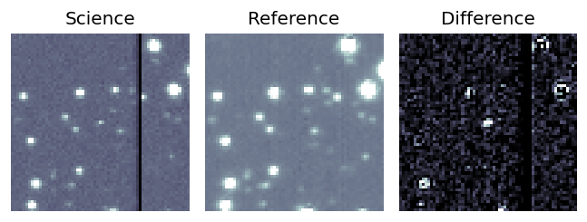
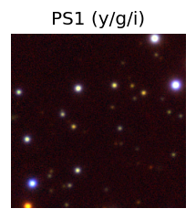
TESS: Sectors [ 80 118]
PS1: 1 source in 3 arcsec Closest: d = 6.26 arcsec photoz=0.64+/-0.10 peak abs mag = -24.53
LegacySurvey: 0 sources in 3 arcsec
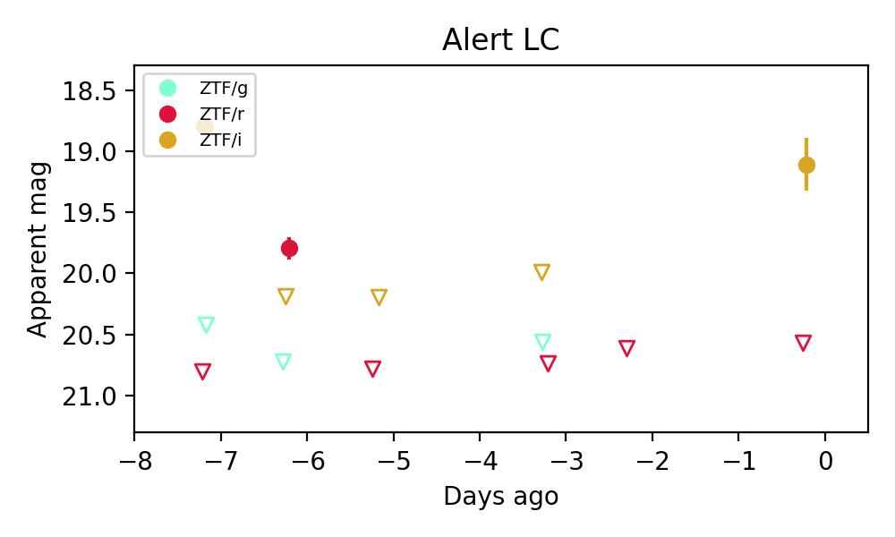
Extinction-corrected gr color:
From alerts: 0.7 +/- 99 mag
Extinction-corrected gi color:
From alerts: 1.28 +/- 99 mag
Extinction-corrected ri color:
From alerts: 1.34 +/- 99 mag
Rise Rate:
r: 1.01 mag/day
i: 1.3 mag/day
Fade Rate:
r: 1.02 mag/day
i: 1.49 mag/day
15. [ZTF] ZTF26abiwfzf (FBOT?) [Back to Top] [Share] [Trigger Swift] [Fritz Alert] [Fritz Source] [Lasair]RA, Dec: 271.16153, -0.01804 18h 4m38.77s, 0d-1m-4.94sGalactic (l, b): 27.52221, 10.38744 ext(g-r) = 0.435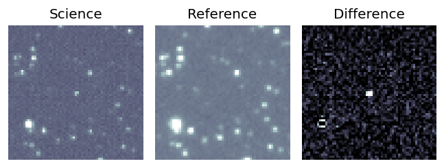
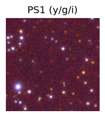
TESS: Sectors [ 80 118]
PS1: 1 source in 3 arcsec Closest: d = 1.83 arcsec photoz=0.08+/-0.26 peak abs mag = -19.90
LegacySurvey: 0 sources in 3 arcsec
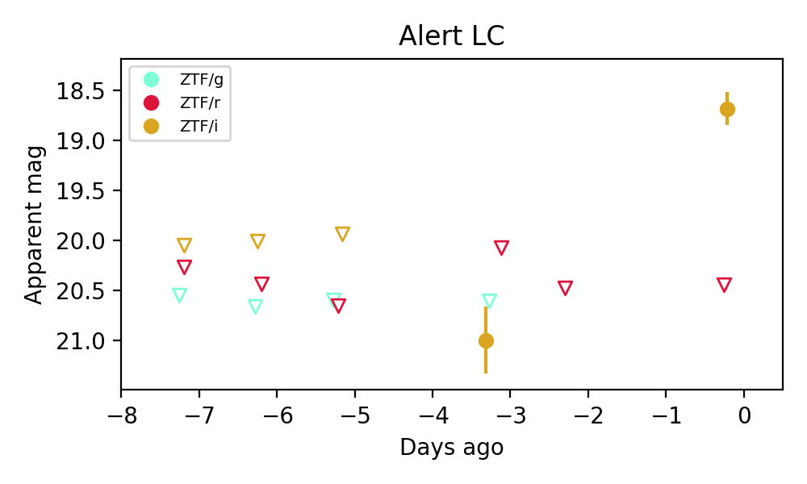
Extinction-corrected gi color:
From alerts: -1.06 +/- 99 mag
Extinction-corrected ri color:
From alerts: 1.52 +/- 99 mag
Rise Rate:
i: 0.75 mag/day
Fade Rate:
16. [ZTF] ZTF26abixcxc (Afterglow?) [Back to Top] [Share] [Trigger Swift] [Fritz Alert] [Fritz Source] [Lasair]RA, Dec: 287.80236, -10.50785 19h11m12.57s, -10d-30m-28.25sGalactic (l, b): 25.73604, -9.12306 ext(g-r) = 0.373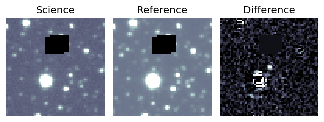
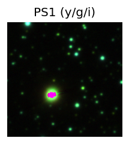
TESS: Sectors [54 80 92]
PS1: 1 source in 3 arcsec Closest: d = 5.79 arcsec photoz=0.06+/-0.01 peak abs mag = -18.39
LegacySurvey: 0 sources in 3 arcsec
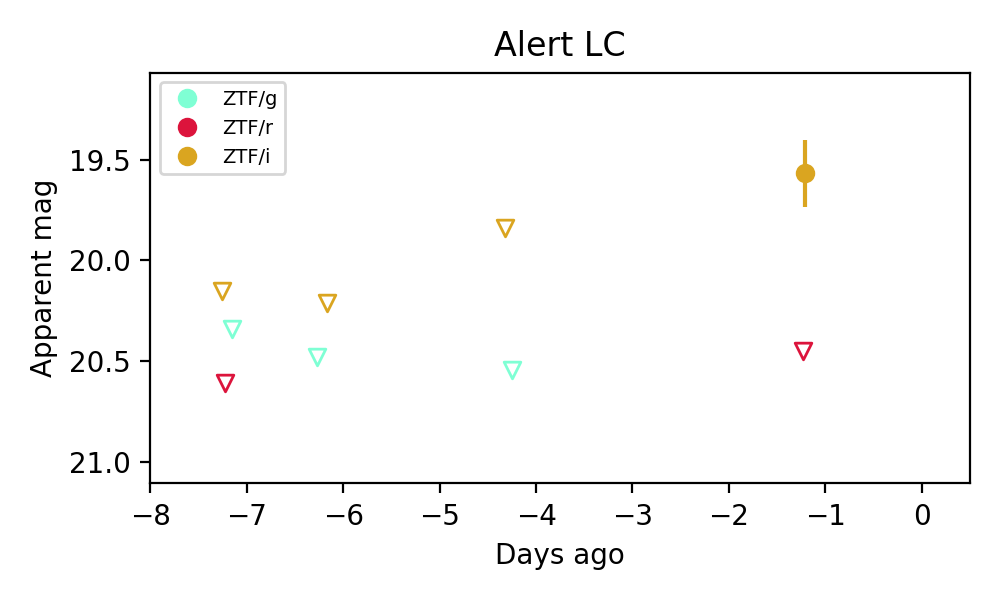
Extinction-corrected gi color:
From alerts: 0.09 +/- 99 mag
Extinction-corrected ri color:
From alerts: 0.68 +/- 99 mag
Rise Rate:
i: 0.71 mag/day
Fade Rate:
i: 0.82 mag/day
17. [ZTF] ZTF26abixcxh (Afterglow?) [Back to Top] [Share] [Trigger Swift] [Fritz Alert] [Fritz Source] [Lasair]RA, Dec: 288.60905, -10.12136 19h14m26.17s, -10d-7m-16.88sGalactic (l, b): 26.44158, -9.66596 ext(g-r) = 0.321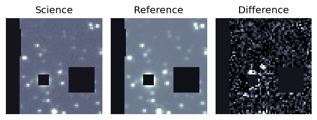
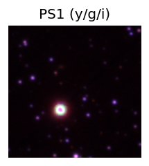
TESS: Sectors [54 80 92]
PS1: 0 sources in 3 arcsec
LegacySurvey: 0 sources in 3 arcsec
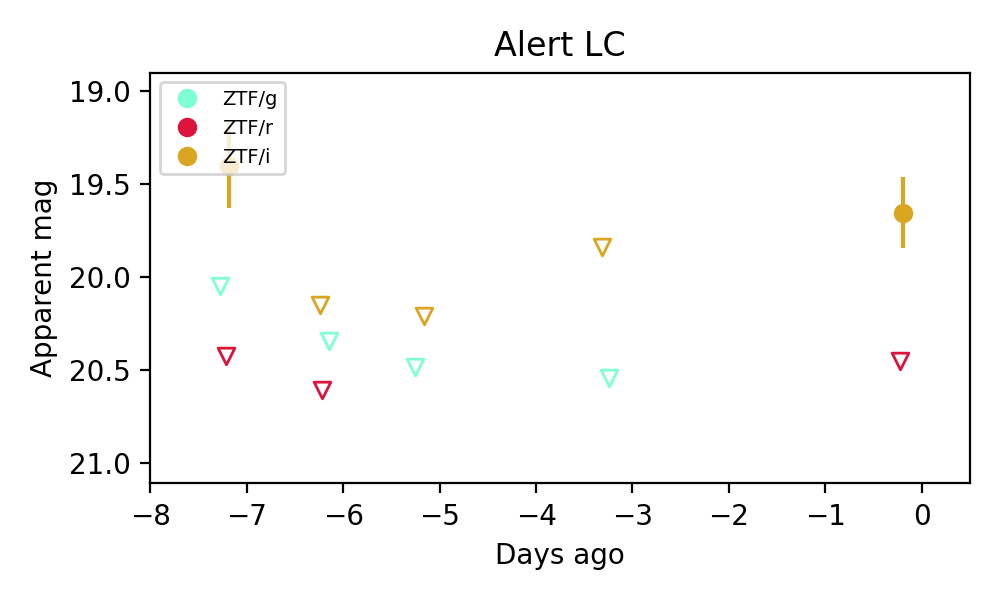
Extinction-corrected gi color:
From alerts: 0.15 +/- 99 mag
Extinction-corrected ri color:
From alerts: 0.62 +/- 99 mag
Rise Rate:
i: 0.69 mag/day
Fade Rate:
i: 0.79 mag/day
18. [ZTF] ZTF26abixryg (FBOT?) [Back to Top] [Share] [Trigger Swift] [Fritz Alert] [Fritz Source] [Lasair]RA, Dec: 320.63694, 26.60865 21h22m32.87s, 26d36m31.13sGalactic (l, b): 75.46777, -16.45287 ext(g-r) = 0.131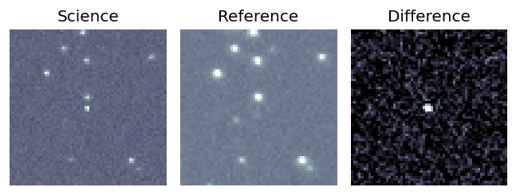
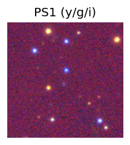
TESS: Sectors [ 15 55 82 121]
SDSS (<15 kpc):Found SDSS phot-z: z=0.32; peak abs mag = -21.96
PS1: 1 source in 3 arcsec Closest: d = 2.98 arcsec photoz=0.46+/-0.17 peak abs mag = -22.87
LegacySurvey: 0 sources in 3 arcsec
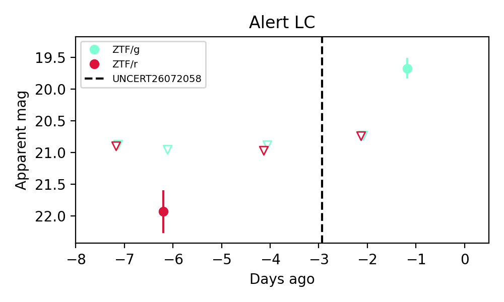
Extinction-corrected gr color:
From alerts: -1.11 +/- 99 mag
Rise Rate:
g: 1.15 mag/day
Fade Rate:
19. [ZTF] ZTF26abiysxs (FBOT?) [Back to Top] [Share] [Trigger Swift] [Fritz Alert] [Fritz Source] [Lasair]RA, Dec: 321.85456, 29.68992 21h27m25.10s, 29d41m23.71sGalactic (l, b): 78.5576, -15.10897 ext(g-r) = 0.183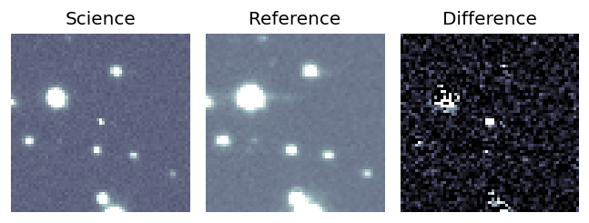
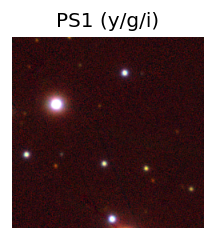
TESS: Sectors [ 15 55 82 121]
PS1: 1 source in 3 arcsec Closest: d = 8.44 arcsec photoz=0.40+/-0.00 peak abs mag = -23.13
LegacySurvey: 0 sources in 3 arcsec
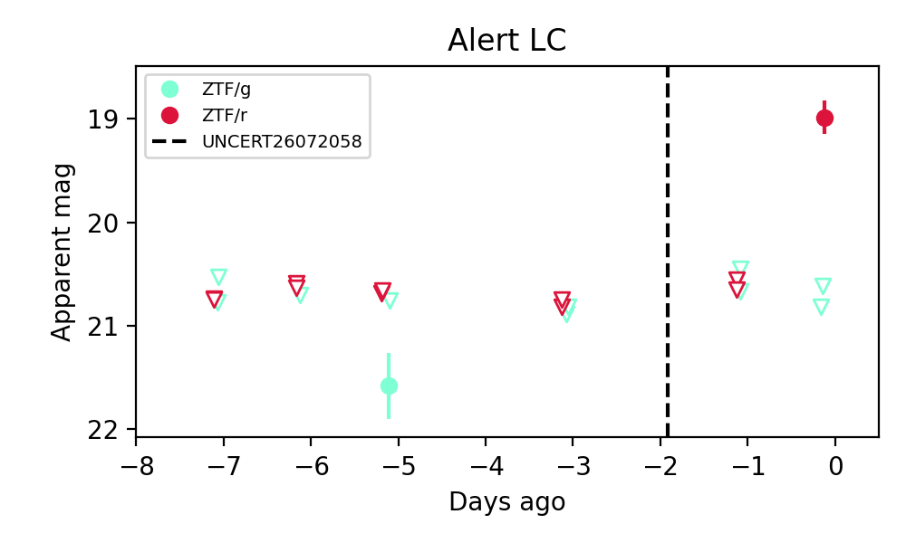
Extinction-corrected gr color:
From alerts: 1.65 +/- 99 mag
Rise Rate:
r: 1.65 mag/day
Fade Rate:
20. [ZTF] ZTF26abiziwb (FBOT?) [Back to Top] [Share] [Trigger Swift] [Fritz Alert] [Fritz Source] [Lasair]RA, Dec: 5.117, 0.8914 0h20m28.08s, 0d53m29.04sGalactic (l, b): 106.79662, -61.00642 WARNING: -1.21 deg from ecliptic plane ext(g-r) = 0.026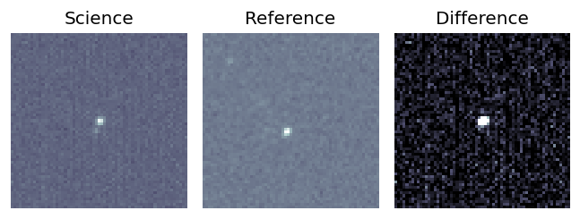
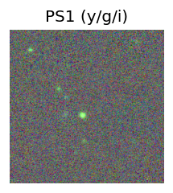
TESS: Sectors [42 43 70]
SDSS (<15 kpc):Found SDSS phot-z: z=0.39; peak abs mag = -23.20
PS1: 0 sources in 3 arcsec
LegacySurvey: 1 sources in 3 arcsec Closest: d = 4.21 arcsec, 152.6 deg (east of north) photoz=0.19 (68% bounds 0.05, 0.79), type=PSF peak abs mag = -21.37 (68% bounds -18.06, -25.01)
Extinction-corrected gi color:
From alerts: 0.33 +/- 99 mag
Extinction-corrected ri color:
From alerts: 0.59 +/- 99 mag
Rise Rate:
r: 1.9 mag/day
Fade Rate:
21. [ZTF] ZTF26abizkfl (FBOT?) [Back to Top] [Share] [Trigger Swift] [Fritz Alert] [Fritz Source] [Lasair]RA, Dec: 337.38228, 1.61421 22h29m31.75s, 1d36m51.14sGalactic (l, b): 67.26571, -45.36739 ext(g-r) = 0.089
TESS: Sectors [42 70 82 92]
PS1: 0 sources in 3 arcsec
LegacySurvey: 1 sources in 3 arcsec Closest: d = 1.59 arcsec, 178.2 deg (east of north) photoz=0.72 (68% bounds 0.5, 1.21), type=PSF peak abs mag = -25.13 (68% bounds -24.21, -26.54)
Extinction-corrected gr color:
From alerts: 2.15 +/- 99 mag
Rise Rate:
r: 2.24 mag/day
Fade Rate: